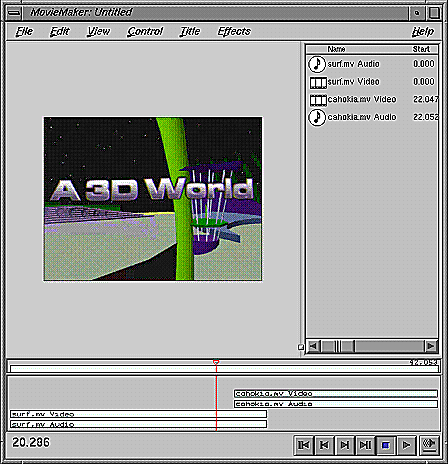
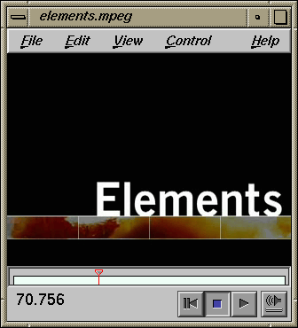
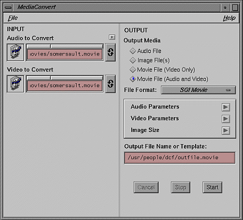
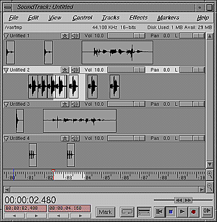
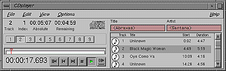
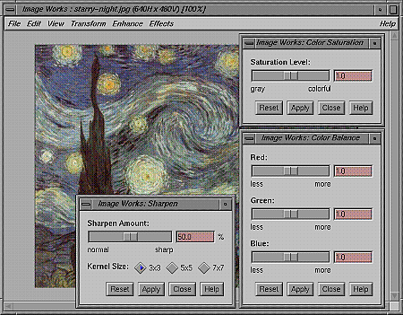

Your Silicon Graphics workstation includes a suite of powerful tools for creating, editing, and viewing all types of digital media. Still images, moving images, sound, and 3-D can be integrated into your documents easily using these tools. The digital media tools work together as well as stand-alone to maximize your productivity and creativity. Here are some of the benefits of the new digital media tool suite.
The fastest and easiest tool for basic video editing, featuring cut and paste, multiple track support, and annotation of clips with text, graphics, and additional video tracks via “picture in picture.” The entire project is shown at the bottom of the window so that video and audio elements can be quickly arranged, truncated, removed, and processed. (Updates: Moviemaker)

A fast, convenient tool for viewing all types of time-base media. It supports SGI and Quicktime movies, as well as sound and still image files. Media Player can be used as a stand-alone player or in sync with other media tools using the shared transport controls. (Replaces: Movieplayer)

A tool that provides a simple method for converting media file formats. MediaConvert converts audio (AIFF,AIFF-C, NeXT/Sun, WAV, MPEG-1), video (Quicktime, MPEG-1, SGI, AVI), and image (SGI RGB, JPEG, JFIF, GIF, TIFF, FIT, PhotoCD) file types.

MediaConvert also allows you to strip out video or audio from formats that include both, and combine audio and video into single files. You can also change audio parameters such as sample rate and resolution, video parameters such as compression, quality, and image size.
An audio editor which now supports multiple independent audio tracks: solo/mute, volume, pan, etc. Designed to support editing applications such as MediaMaker and Adobe Premiere.
SoundTrack allows you to manage multiple tracks of audio independently in a track/clip-based interface. Record audio directly into SoundTrack, or import sound from another file such as Quicktime and MPEG movies or any of 16 different sound file formats. You can even overdub record, mixing the new material with existing sounds in real time.
SoundTrack also allows you to manipulate audio to produce just the sound you're looking for. Using the real-time tools, you can adjust volume (slider control and envelope ramp), pan (slider control and envelope ramp), and EQ. Additional special effects such as fade-in, fade-out, normalization of level, reverberation and delay effects, automatic removal of silence.

CD/DAT player is a tool for playback and capture of audio CDs and DATs from peripherals. CD/DAT Player now adds what no other manufacturer can: The automatic NFS mounting of CD and DAT audio tracks as digital files on the desktop, making capturing audio fast and easy, and mastering for audio DATs (Replaces: CDman and DATman)

A powerful image processing and conversion tool. Features include crop, scale, stretch, flip, sharpen, blur, brightness, contrast, and many more.
